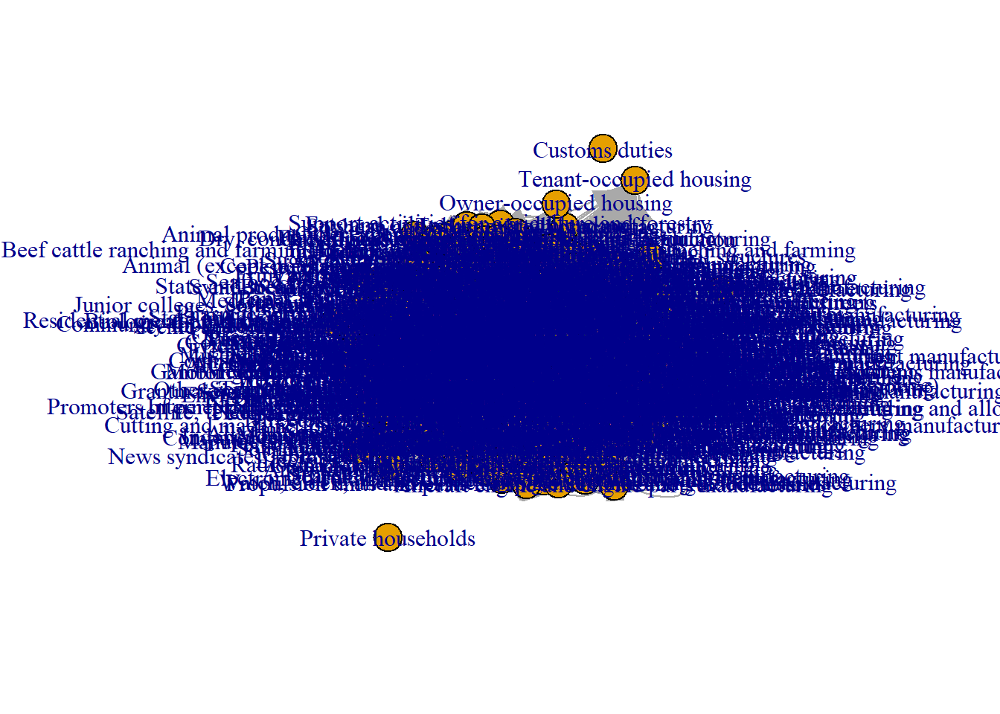
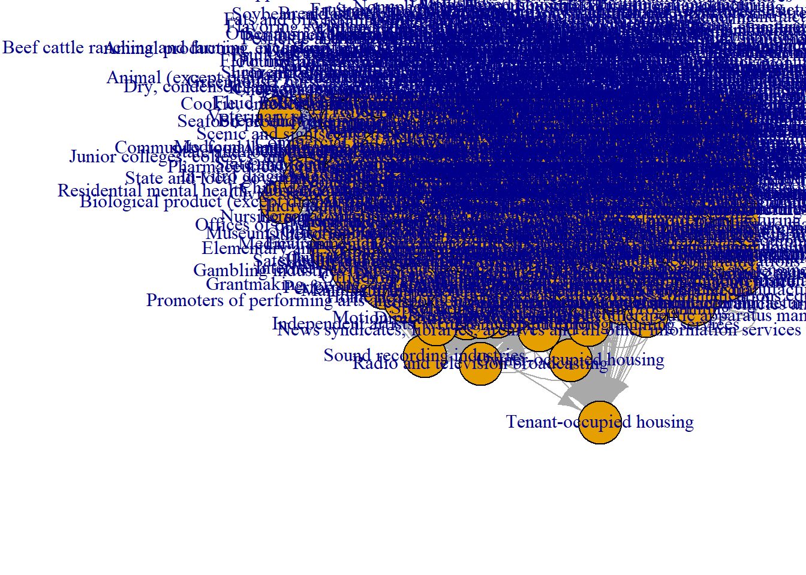
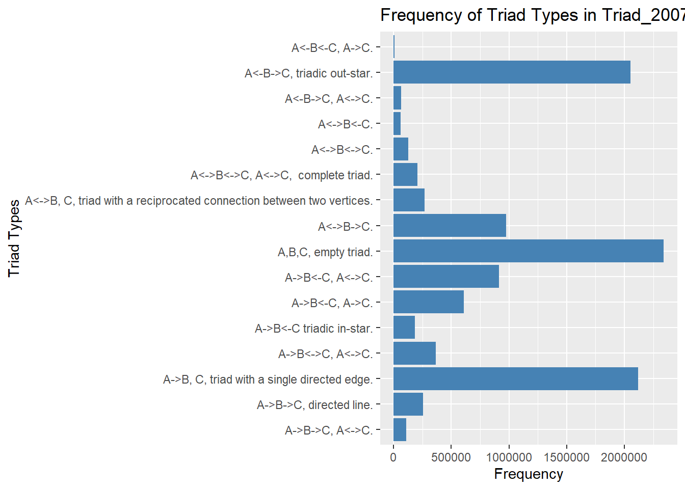

requirements_2007 <- read_xlsx("_data/got/US_input_output_table_2007_and_2012.xlsx", sheet = 4, skip = 4)
requirements_2012 <- read_xlsx("_data/got/US_input_output_table_2007_and_2012.xlsx", sheet = 3, skip = 4)Week 2 Challenge
challenge_2
instructions
Describing the Basic Structure of a Network
Challenge Overview
Describe the basic structure of a network following the steps in tutorial of week 2, this time using a dataset of your choice: for instance, you could use Marriages in Game of Thrones or Like/Dislike from week 1.
Another more complex option is the newly added dataset of the US input-output table of direct requirements by industry, availabe in the Bureau of Economic Analysis. Input-output tables show the economic transactions between industries of an economy and thus can be understood as a directed adjacency matrix. Data is provided in the form of an XLSX file, so using read_xlsx from package readxl is recommended, including the sheet as an argument (2012 for instance).
Identify and describe content of nodes and links, and identify format of data set (i.e., matrix or edgelist, directed or not, weighted or not), and whether attribute data are present. Be sure to provide information about network size (e.g., information obtained from network description using week 1 network basic tutorial commands.)
First, a look at the data:
head(requirements_2007)# A tibble: 6 × 407
Code Commo…¹ 1111A…² 1111B…³ 11120…⁴ 11130…⁵ 11140…⁶ 11190…⁷ 11212…⁸ 1121A…⁹
<chr> <chr> <dbl> <dbl> <dbl> <dbl> <dbl> <dbl> <dbl> <dbl>
1 1111A0 Oilsee… 0.0524 0.00135 2.37e-4 0 0 4.9 e-6 0 0
2 1111B0 Grain … 0 0.0663 0 0 0 1.53e-2 0.0450 0.0707
3 111200 Vegeta… 0 0 3.03e-2 1.66e-4 0 0 0 0
4 111300 Fruit … 0 0 0 1.15e-2 0 0 0 0
5 111400 Greenh… 0 0 0 0 1.46e-1 0 0 0
6 111900 Other … 0.00636 0.00714 0 0 2.52e-5 2.69e-2 0.0247 0.0207
# … with 397 more variables: `112300` <dbl>, `112A00` <dbl>, `113000` <dbl>,
# `114000` <dbl>, `115000` <dbl>, `211000` <dbl>, `212100` <dbl>,
# `212230` <dbl>, `2122A0` <dbl>, `212310` <dbl>, `2123A0` <dbl>,
# `213111` <dbl>, `21311A` <dbl>, `221100` <dbl>, `221200` <dbl>,
# `221300` <dbl>, `233210` <dbl>, `233262` <dbl>, `230301` <dbl>,
# `230302` <dbl>, `2332A0` <dbl>, `233412` <dbl>, `2334A0` <dbl>,
# `233230` <dbl>, `2332D0` <dbl>, `233240` <dbl>, `233411` <dbl>, …The dataset is not exactly ready for import. There are mismatching columns and ‘codes’.
dim(requirements_2007)[1] 409 407This code attempts to resolve that using the intersect() between the values.
# Get the column names and values in the "Code" column
cols <- colnames(requirements_2007)
code <- requirements_2007$Code
codes_intersect <- intersect(cols, code)
requirements_adjacency_full <- requirements_2007 %>% filter(Code %in% codes_intersect) %>% select('Code', 'Commodity Description', all_of(codes_intersect))
requirements_adjacency_matrix <- as.matrix(requirements_2007 %>% filter(Code %in% codes_intersect) %>% select(all_of(codes_intersect)))
#Get dimensions of matrix - is it 'square'?
dim(requirements_adjacency_matrix)[1] 401 401The resulting data is ‘square’ and only includes codes found in both the ‘Code’ column and column names. Now that it is in matrix format using as.matrix, I can give it to igraph:
requirements_2007_matrix.ig <- graph_from_adjacency_matrix(requirements_adjacency_matrix, weighted = TRUE,
mode = "directed")
vcount(requirements_2007_matrix.ig)[1] 401ecount(requirements_2007_matrix.ig)[1] 51860The igraph object has 401 vertices and 51860 edges.
is_bipartite(requirements_2007_matrix.ig)[1] FALSEis_directed(requirements_2007_matrix.ig)[1] TRUEis_weighted(requirements_2007_matrix.ig)[1] TRUEIt’s not bipartite, yet it is directed (like I specified) and weighted (like I specified). The directions are the flow of commodities from industry to industry, and the weights are dollar amounts in millions USD.
Because it’s from a numeric matrix, just name and weight are included.
#Just names and weight
vertex_attr_names(requirements_2007_matrix.ig)[1] "name"edge_attr_names(requirements_2007_matrix.ig)[1] "weight"Hang on. There are some negative edges?
#Wait. Some negative values?
summary(E(requirements_2007_matrix.ig)$weight) Min. 1st Qu. Median Mean 3rd Qu. Max.
-0.0045264 0.0001213 0.0006157 0.0041073 0.0024217 0.6891621 # identify edges with negative weights
negative_edges <- which(E(requirements_2007_matrix.ig)$weight < 0)
# print the edges with negative weights
E(requirements_2007_matrix.ig)[negative_edges]+ 8/51860 edges from c781ed9 (vertex names):
[1] 1111A0->S00600 1111B0->S00600 31151A->S00600 5241XX->334111 5241XX->312200
[6] 5241XX->5191A0 5241XX->522A00 5241XX->52A000Only 8 negative edges. I want to remove them since they make finding distances impossible later. At just 8 edges of a low magnitude, I am not sure if they will make a difference either way.
requirements_2007_matrix.ig <- delete_edges(requirements_2007_matrix.ig, negative_edges)As expected, 8 less than before.
ecount(requirements_2007_matrix.ig)[1] 51852I want to bring in the descriptions in next:
commodity_names <- setNames(requirements_adjacency_full$`Commodity Description`, requirements_adjacency_full$Code)
# Set the vertex attribute with the industry names
V(requirements_2007_matrix.ig)$commodity_name <- commodity_names[as.character(V(requirements_2007_matrix.ig)$name)]Now they are in the igprah object:
head(V(requirements_2007_matrix.ig)$commodity_name)[1] "Oilseed farming"
[2] "Grain farming"
[3] "Vegetable and melon farming"
[4] "Fruit and tree nut farming"
[5] "Greenhouse, nursery, and floriculture production"
[6] "Other crop farming" Really, though, I want the vertexes to be named with those descriptions:
V(requirements_2007_matrix.ig)$name <- V(requirements_2007_matrix.ig)$commodity_namePlotting for the first time:
plot(requirements_2007_matrix.ig)
A zoomed in version is better:
set.seed(1)
# Set x and y axis limits
xlim <- c(-1, 0)
ylim <- c(-1, 0)
# Plot the graph with arrows and node labels
plot(requirements_2007_matrix.ig, xlim=xlim, ylim=ylim)
Dyad Census
20039 mutual, 31426 asymmetric, and 38735 empty dyads:
igraph::dyad.census(requirements_2007_matrix.ig)$mut
[1] 10039
$asym
[1] 31426
$null
[1] 38735Triad Census
The output of this function is not readily interpretable:
triad_2007 <- igraph::triad_census(requirements_2007_matrix.ig)
triad_2007 [1] 2342075 2118395 267294 2051609 185533 255376 61575 974775 609733
[10] 8020 128794 64031 915196 111459 364562 208173To help with that, I found a table describing the types of triad connections. The source from this table is here:
triad_types <- c(
'003' = 'A,B,C, empty triad.',
'012' = 'A->B, C, triad with a single directed edge.',
'102' = 'A<->B, C, triad with a reciprocated connection between two vertices.',
'021D' = 'A<-B->C, triadic out-star.',
'021U' = 'A->B<-C triadic in-star.',
'021C' = 'A->B->C, directed line.',
'111D' = 'A<->B<-C.',
'111U' = 'A<->B->C.',
'030T' = 'A->B<-C, A->C.',
'030C' = 'A<-B<-C, A->C.',
'201' = 'A<->B<->C.',
'120D' = 'A<-B->C, A<->C.',
'120U' = 'A->B<-C, A<->C.',
'120C' = 'A->B->C, A<->C.',
'210' = 'A->B<->C, A<->C.',
'300' = 'A<->B<->C, A<->C, complete triad.'
)Now to combine those with the data,
names(triad_2007) <- triad_types
triad_2007 <- data.frame(triad_2007)
triad_2007$triad_type <- row.names(triad_2007)Then to plot:
ggplot(triad_2007, aes(x = triad_type, y = triad_2007)) +
geom_bar(stat = "identity", fill = "steelblue") +
coord_flip() +
labs(x = "Triad Types", y = "Frequency",
title = "Frequency of Triad Types in Triad_2007 Data Frame")
Global and Local Transitivity or Clustering
First, the transitivity overall:
transitivity(requirements_2007_matrix.ig)[1] 0.6516905And now, the comparison between the global and local clustering coefficients, respectively:
#get global clustering coefficient: igraph
transitivity(requirements_2007_matrix.ig, type="global")[1] 0.6516905#get average local clustering coefficient: igraph
transitivity(requirements_2007_matrix.ig, type="average")[1] 0.7845561Path Length and Component Structure
Here is the distance between “Automobile manufacturing” and “Truck trailer manufacturing”
distances(requirements_2007_matrix.ig,"Automobile manufacturing", "Truck trailer manufacturing") Truck trailer manufacturing
Automobile manufacturing 2.6e-06And the overall average path length:
average.path.length(requirements_2007_matrix.ig,directed=T)[1] 0.0007344345This shows we have an unconnected graph with two isolates and, technically, 3 components (one of them being giant)
names(igraph::components(requirements_2007_matrix.ig))[1] "membership" "csize" "no" igraph::components(requirements_2007_matrix.ig)$no #Number of components[1] 3igraph::components(requirements_2007_matrix.ig)$csize #Size of each component[1] 399 1 1Postscript: NAICS Codes
Just including this here because I want to use it in a later assignment.
The second sheet includes a look-up table of NAICS codes. Unfortunately, the ‘child’ NAICS codes do not always begin with the same numbers as the ‘parent’ category NAICS codes. For example, Durable Goods 33DG contains NAICS code 3211 (Sawmills and wood preservation).
I want to use the parent NAICS codes to make a legible graph with a reasonable number of nodes.
#Get NAICS codes
naics <- read_xlsx("_data/got/US_input_output_table_2007_and_2012.xlsx", sheet = 2, skip = 4)New names:
• `` -> `...5`In other words, I just want these sectors:
naics %>%
filter(!str_detect(Summary, "\\d"))# A tibble: 32 × 7
Sector Summary U.Sum…¹ Detail ...5 Notes Relat…²
<chr> <chr> <chr> <chr> <chr> <chr> <chr>
1 11 AGRICULTURE, FORESTRY, FISHING, AN… <NA> <NA> <NA> <NA> <NA>
2 21 MINING <NA> <NA> <NA> <NA> <NA>
3 22 UTILITIES <NA> <NA> <NA> <NA> <NA>
4 23 CONSTRUCTION <NA> <NA> <NA> <NA> <NA>
5 33DG DURABLE GOODS <NA> <NA> <NA> <NA> <NA>
6 31ND NONDURABLE GOODS <NA> <NA> <NA> <NA> <NA>
7 42 WHOLESALE TRADE <NA> <NA> <NA> <NA> <NA>
8 44RT RETAIL TRADE <NA> <NA> <NA> <NA> <NA>
9 48TW TRANSPORTATION AND WAREHOUSING, EX… <NA> <NA> <NA> <NA> <NA>
10 51 INFORMATION <NA> <NA> <NA> <NA> <NA>
# … with 22 more rows, and abbreviated variable names ¹U.Summary,
# ²`Related 2012 NAICS Codes`To get there, I’ll use fill(). After this, every value in Related 2012 NAICS Codes will have one of the ~30 NAICS sectors accompanying it.
#Remove any value in `Summary` if it has even one number
naics <- naics %>% mutate(Summary = case_when(
(str_detect(Summary, "\\d")) ~ NA,
TRUE ~ Summary))
naics <- naics %>% fill(Sector, Summary)
naics# A tibble: 1,026 × 7
Sector Summary U.Sum…¹ Detail ...5 Notes Relat…²
<chr> <chr> <chr> <chr> <chr> <chr> <chr>
1 11 AGRICULTURE, FORESTRY, FISHING, AN… <NA> <NA> <NA> <NA> <NA>
2 11 AGRICULTURE, FORESTRY, FISHING, AN… <NA> <NA> <NA> <NA> <NA>
3 11 AGRICULTURE, FORESTRY, FISHING, AN… Farms <NA> <NA> <NA> <NA>
4 11 AGRICULTURE, FORESTRY, FISHING, AN… <NA> <NA> <NA> <NA> <NA>
5 11 AGRICULTURE, FORESTRY, FISHING, AN… 111 Crop … <NA> <NA> <NA>
6 11 AGRICULTURE, FORESTRY, FISHING, AN… <NA> <NA> <NA> <NA> <NA>
7 11 AGRICULTURE, FORESTRY, FISHING, AN… <NA> 1111A0 Oils… <NA> 11111-2
8 11 AGRICULTURE, FORESTRY, FISHING, AN… <NA> 1111B0 Grai… <NA> 11113-…
9 11 AGRICULTURE, FORESTRY, FISHING, AN… <NA> 111200 Vege… <NA> 1112
10 11 AGRICULTURE, FORESTRY, FISHING, AN… <NA> 111300 Frui… <NA> 1113
# … with 1,016 more rows, and abbreviated variable names ¹U.Summary,
# ²`Related 2012 NAICS Codes`More to come on this next assignment.